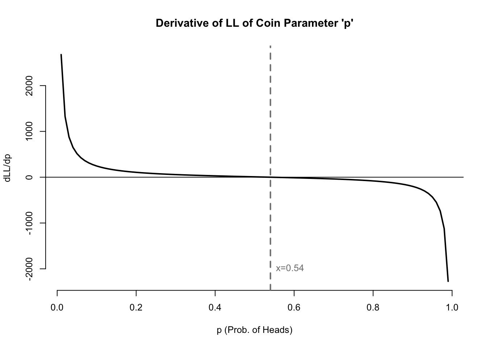

All of the methods and theory presented in these notes are examples of parametric inference. If you aren’t already familiar with that term, it’s worth exploring now.
1.1 Inferential statistics
When I was young, I first heard the term “statistics” used to summarize or highlight the values of a dataset:
Among Major League Baseball pitchers, Nolan Ryan holds the career strikeout record with a total of 5714.
Japan has a greater proportion of centenarians (people who are over 100 years of age) than any other country, at 43 per 100,000 residents.
Roughly 24% of the bullet chess players on [www.chess.com] have an Elo score better than my own.
These figures are correctly called statistics, but statisticians label them as descriptive statistics. They are incontrovertible facts. They are properties of a fixed sample which we can all agree upon. They do not require theory, just a calculation. Once I explain to you how to compute a median, you know that the median of the numbers {1,1,2,3,5,8,13} is 3, without having to argue over assumptions.
By contrast, the field of inferential statistics concerns itself with a shadowy world we cannot see and which might not exist. Inferential statistics starts from the assumption that the numbers in our world come to us from unknown, but systematic and guessable generating processes. The data we observe are realizations of random variables, and the random variables are defined by formulae, and the formulae are controlled by parameters. If we can correctly guess the general form of the random variables which created a given dataset, then the same dataset can help us to guess the specific parameters for each random variable. Once we know those parameters, we can usually answer more detailed questions about the generating process, even questions for which we have no direct observational evidence.
For example, our study of the Earth and the broader solar system suggests that meteors with a diameter of more than 1 km strike the Earth roughly every 500,000 years. We believe that such meteor strikes are closely approximated by a Poisson process, and that therefore the time between large meteor strikes could be represented by an exponential distribution with the parameter \(\lambda=0.000002\) (here \(\lambda\), or lambda, represents the long-term rate of meteor strikes per year).
If all this is true, then I can use the exponential distribution to calculate that the probability of a large meteor strike in my lifetime (or equivalently, in the next 50 years) is only about 0.01%:1
Of course, I cannot prove my calculation is right or wrong. If the next large meteor struck tomorrow, or just as I died, or two thousand years from now, none of these would validate or invalidate my estimate. But the estimate might still be flawed for several reasons. Further research might change our estimate of how often such meteors strike the Earth — perhaps it’s roughly once every 400,000 years, or every 600,000 years. We may even be wrong about meteor strikes being Poisson processes, and if they are not, then I would need a completely new set of assumptions.
Yet consider my approach:
I started from a dataset (the geologic record of how many large meteors have struck the Earth during the Cenozoic period)
I assumed that the data came from a specific probability distribution
I used the data to make a guess as to which parameters controlled that distribution
With my guess for the parameters, I was able to answer questions that the data by itself could not answer
These are the central concepts of inferential statistics. We make assumptions about how the world works, and then use data to estimate various unknown parameters. We are always wrong in our guesses –– and we don’t even know how wrong we are. We are sometimes even wrong about our distributional assumptions. I wouldn’t say we are taking guesses in the dark, but the room can be very dim indeed. However, our reward is to be able to describe things we have not seen, to predict the future, and to better understand the past.
1.2 How all parametric estimation is performed
I described the steps above in generalities. We have not yet discussed how to make a guess about the parameters of a distribution. Nor have we discussed what makes one guessing method better or worse than other guessing methods. Before I can talk about these subjects, we need to introduce a few definitions.
We will start with some data. Perhaps we have a univariate vector of \(n\) observations: \(\boldsymbol{x} = \{x_1,x_2,\ldots,x_n\}\).2 I will frequently describe \(\boldsymbol{x}\) as our sample, even if it was collected by non-sampling methods.
Next, let’s introduce a distributional assumption. The data \(x\) are realizations of a random variable \(X\) with a cumulative distribution function \(F_X\) controlled by one or more parameters \(\theta\) (theta). The probability or density of each observation \(x_i\) depends not only on its value but also on the parameters \(\theta\). We could write,
\[P(X \le x_i) = F_X(x_i;\theta) \qquad \forall i \in \mathbb{N}:\ 1 \le i \le n\]
Statistics textbooks sometimes refer to \(\theta\) as the estimand. In my experience, very few real-world professionals use this term. From now on, we will simply refer to \(\theta\) as the parameters or often the unknown parameters, which emphasizes the fact that we rarely know their true value.
Now, let’s make a guess as the value(s) of \(\theta\). There are several methods we could use to make this guess, general systems for guessing that work well for many distributions and many datasets. Right now, the specific method we use is unimportant. What is important is that our guess should be some function of the data in front of us. That is, our data \(\boldsymbol{x}\) should inform our guess for the parameters \(\theta\). The calculation which transforms our data into a guess of the parameter is called the estimator and written \(\hat{\theta}\) (theta-hat):
\[\hat{\theta} = g(\boldsymbol{x})\]
Written this way, \(\hat{\theta}\) is a calculation, a function \(g\) that we apply to each new sample \(\boldsymbol{x}\), producing a different result for different samples. Anytime we use our estimator \(\hat{\theta}\) on a specific sample, the result of this calculation is called the estimate of \(\theta\). The estimator is the function, and the estimate is its value for a specific sample.
Allow me a metaphor to sum this all up. Inferential statistics is like baking chocolate chip cookies. We each have an idea of what chocolate chip cookies should taste like (please take a moment to imagine your own perfect cookie). This theoretical goal is the unknown parameter. We want to make the best real-world version of this unattainable perfection. We can choose from many recipes, or even make a new recipe of our own. Some recipes lean toward one texture or another, or accentuate some flavors more than others. Each different recipe is a different estimator. We may think one recipe is better than another, but that doesn’t mean that it always produces a perfect batch of cookies. Depending on the materials at hand — the freshness of the ingredients, the specific brand of chocolate, the shape and reliability of the oven, our altitude — even our favorite recipe might produce a bad batch of cookies, or an unloved recipe might produce a surprisingly good batch of cookies. Each individual batch is a different estimate, and those conditions which vary batch-to-batch are the data.
1.3 Statistical models and machine learning models
Now that we’ve reviewed the aims of parametric inference, you might wonder how it differs from any other type of data analysis. After all, don’t all quantitative methods use the information in a dataset to answer questions about the world around us?
A statistical model makes a strong assumption that the data has a functional form, i.e. that the data are realizations of a random variable with a known distribution type. The only unknowns are the specific values of the parameters which created the data. Finding estimates for these parameters is typically the “finish line” for the analysis: most of the useful findings flow directly from the estimated theoretical distribution.
Statistical models are high-risk and high-reward. Very few datasets are perfectly distributed according to known probability distributions. Even if the generating process is well understood, the parameters which govern the data might change over time, and the dataset we use may give us outdated information. The extremes of the distribution will typically be the least observed, and we may produce catastrophically bad predictions when we naively fit the wrong distributions to these unobserved regions.3
At first, we accepted these risks because we had no other choice. There were few alternative methods, and practitioners were limited by the data and technology of their day: dozens or hundreds of observations, studied without electronic help or with relatively primitive computing resources.
All these drawbacks are also the strengths of statistical modeling. Statistical models can give a wide range of answers about how a generating process will behave in conditions never seen in the data. Statistical models are often very resource-light, and some can even be computed by hand. Statistical models will work with almost any amount of data and can give useful results with very small sample sizes. The parameters that we estimate from statistical models often give us powerful insight into how and why the world works.
A machine learning (ML) model, by contrast, does not believe or require that the data were generated by a probability distribution. ML models are generally uninterested in the idea of a single generating process which created all the data. They explore clusters and breakpoints within the data, seeking to find useful rulesets or “views” of the data which preserve as much of the original information as possible.
An ML model might use parametric components which are iteratively tuned in order to minimize an error function. For example, the bins created by a decision tree or the hyperplane classifiers of support vector machines are both defined by parameters. But these parameters are generally not associated with probability distributions.
ML models typically offer less interpretability than statistical models. They are less eager to find hidden “truths” in the world around us, less able to explain how changes in the inputs result in changes to the outputs. They can also be very resource-intensive, requiring both large amounts of data as well as large amounts of computing power.
In return, ML models offer flexibility and robustness in situations which would defy statistical modeling. ML models usually perform better than statistical models on very large datasets, which are more likely the result of many different generating processes rather than a single generating process. ML models thrive on heterogeneity and local differences in behavior, which often confound or mislead statistical models. You will learn about them in other courses. For now, we will focus on statistical models.
1.4 Maximum likelihood estimation
Let’s begin studying statistical inference with the simplest of cases: trying to determine the distribution which generated a single column of numbers. I assume your familiarity with some of the most common probability distributions: the discrete Bernoulli, binomial, geometric, and Poisson distributions, along with the continuous uniform, exponential, and normal distributions. If you need a refresher, the appendices contain more detail about each of these distributions and others we will study in later sections.
When we ask our computers today to model our data with set of parameters (such as the slope and intercept of a simple regression), the computer usually solves for the unknown parameters using maximum likelihood estimation, a method which was originally developed by Ronald Fisher over 100 years ago. The basic premise of maximum likelihood is to assume that the data aren’t… weird. Of course, the data could be weird: they could be unrepresentative or contain wild outliers. But usually, and by definition, our data aren’t unusual. So we will suppose that the best guess for the unknown parameters will be the values which make the data seem the most ordinary. There are other estimation methods worth learning, but in this course we will focus heavily on maximum likelihood estimation.
1.4.1 Motivation and definition
When we conduct statistical inference, we begin with data, and then we proceed to ask what distribution (and which parameters) could have created the data. Notice that this situation reverses the problems you might find in a high school or college class on probability. In those earlier classes, you would often be asked “if the parameters for this distribution are \(\theta\), then what is the probability of observing \(\boldsymbol{x}\)?” For example:
If a fair coin is flipped 50 times, what is the probability of observing exactly 27 heads and 23 tails?
If the heights of adult women in the United States are normally distributed with a mean of 162 cm and a standard deviation of 7 cm, what is the probability of drawing a sample of ten women who are all shorter than 152 cm?
Instead, the shoe is now on the other foot:
We flip a coin 50 times and observe 27 heads and 23 tails. Is it reasonable to believe that the coin is fair, despite these lopsided results?
We observe the heights of ten women, and we assume they represent a sample from a population which is normally distributed. Based on our sample, what are realistic ranges for the unknown mean \(\mu\) and variance \(\sigma^2\)?
To answer these questions, we will invent a way to “score” each set of possible parameters for a specific dataset. The parameters which seem well fit to the data will receive a higher score. We will consider all parameter choices which score highly as reasonable guesses for the unknown truth, but if we need to make just one guess, then we will choose the parameter or set of parameters with the highest score. We will call this scoring function likelihood.
Imagine a univariate sample \(\boldsymbol{x} = x_1,x_2,\ldots,x_n\) which we believe came from a discrete probability distribution \(X\) with parameters \(\theta\), and assume for the moment that the observations are independent of each other. Then we could compute the probability of observing the entire sample simply by multiplying together the probabilities of each individual observation:
The equation above treats \(\theta\) as a fixed assumption and \(\boldsymbol{x}\) as the input variable. Now we will repurpose this same function but treat \(\boldsymbol{x}\) as the assumption and \(\theta\) as the variable. We will also take the opportunity to extend this idea to a continuous case, using densities rather than probability mass functions:
Let \(X\) be a random variable dependent on one or more parameters \(\theta\) and \(\boldsymbol{x} = x_1,x_2,\ldots,x_n\) be independent sample observations where \(x_i \sim X \quad \forall i \in \mathbb{N}: \ 1 \le i \le n.\) Then we write the likelihood of \(\theta\) given \(\boldsymbol{x}\) as \(\mathcal{L}(\theta|\boldsymbol{x})\). If \(X\) is discrete, we define:
If \(\theta\) has \(k\) parameters, let \(\mathcal{S} \in \mathbb{R}^k\) be the set of values \(\theta\) can take which are permitted by the distribution of \(X\) and the observed values of \(\boldsymbol{x}\). Then the choice for \(\theta\) which maximizes \(\mathcal{L}(\theta|\boldsymbol{x})\) is referred to as the maximum likelihood estimator (MLE) for \(\theta\):
Notice that likelihood functions are usually products of the individual probabilities/densities of each observation in the sample. It can be difficult to directly maximize a complicated product of many terms. Happily, we can use one or two tricks which greatly simplify maximum likelihood estimation. The first trick is to notice that the log of a function reaches its maximum or minimum at the same input values as the original function (that is, logarithms are a monotonic transformation). Below I plot the likelihood function for the coin data mentioned above: 27 heads and 23 tails. I also will plot the log of the likelihood function:
Code
#generate coin datacoins <-c(rep(1,27),rep(0,23))#compute likelihood and log-likelihood functionscoin.lik <-function(p) p^sum(coins)*(1-p)^sum(1-coins)coin.ll <-function(p) sum(coins)*log(p)+sum(1-coins)*log(1-p)#plot coin likelihood and log-likelihoodpar(mfrow=c(1,2),bty='n',cex=0.8)plot((1:99)/100, coin.lik((1:99)/100),type='l',lwd=2,main="Likelihood of Coin Parameter 'p'",xlab='p (Prob. of Heads)',ylab='Likelihood')abline(v=mean(coins),lwd=2,lty=2,col='grey50')text(x=mean(coins),y=0,pos=4,col='grey50',labels=paste0('x=',round(mean(coins),2)))plot((1:99)/100, coin.ll((1:99)/100),type='l',lwd=2,main="Log-likelihood of Coin Parameter 'p'",xlab='p (Prob. of Heads)',ylab='Log-likelihood')abline(v=mean(coins),lwd=2,lty=2,col='grey50')text(x=mean(coins),y=-120,pos=4,col='grey50',labels=paste0('x=',round(mean(coins),2)))
Figure 1.1: Likelihood and log-likelihood of coin flip data
Since the log of a product is simply the sum of logs of each term in the product, we often find log-likelihood proves easier to maximize than the original likelihood function.
Let \(\mathcal{L}(\theta|\boldsymbol{x})\) be the likelihood of a parameter \(\theta\) given a sample \(\boldsymbol{x}\) and a distributional assumption about the random variable \(X\) from which the sample was drawn. Then we denote the log-likelihood of \(\theta\) given \(\boldsymbol{x}\) as \(\ell(\theta|\boldsymbol{x})\) and define it as
The second trick which we use to more easily maximize likelihood is calculus. When a likelihood function is continuously differentiable and has a local maximum (as the two graphs do above), then the same parameter value which maximizes the likelihood and log-likelihood will be a root of the first derivative of the log-likelihood:
Code
# create first derivative of coin log-likelihood functioncoin.dll <-function(p) sum(coins)/p-sum(1-coins)/(1-p)# graph first derivative of coin log-likelihood functionpar(mfrow=c(1,1),bty='n',cex=0.8)plot((1:99)/100, coin.dll((1:99)/100),type='l',lwd=2,main="Derivative of LL of Coin Parameter 'p'",xlab='p (Prob. of Heads)',ylab='dLL/dp')abline(h=0)abline(v=sum(coins)/length(coins),lwd=2,lty=2,col='grey50')text(x=sum(coins)/length(coins),y=-2000,pos=4,col='grey50',labels=paste0('x=',round(sum(coins)/length(coins),2)))

Figure 1.2: First derivative of the log-likelihood of coin flip data
1.4.2 Example 1: Coin flips
Suppose that we were given a coin and told it was fixed to land on one side more than the other. We flip the coin 50 times and record each ‘heads’ as 1 and each ‘tails’ as 0. The results below show that the coin landed ‘heads’ 27 times and ‘tails’ 23 times.
\[\boldsymbol{x}=\left\{\begin{array}{l}{0,0,1,1,0,1,1,1,1,1,1,1,0,0,1,0,0,1,0,0,0,0,1,1,0,\\ 0,1,1,1,0,0,1,1,1,0,1,1,1,0,1,1,0,1,1,1,1,1,1,0,0}\end{array}\right\}\] Let us make a distributional assumption: the coin data can be modeled by a Bernoulli distribution. We cannot know whether this is correct or not, but it seems reasonable: Bernoulli trials require exactly two outcomes, a fixed probability of success, and independence between trials. While it’s possible that the coin could land on its edge, or that it deforms over time, or that it shows serial correlation, modeling the coin flips as Bernoulli trials seems true enough to be useful.4
What is the probability of observing the data if the coin truly lands heads 60% of the time? You should be able to answer this from your past lessons in probability and statistics. Since we assume trials to be independent, we can write:
\[P(\boldsymbol{x} | p = 0.6) = \prod_{i = 1}^{50} P(x_i | p = 0.6) = 0.4 \cdot 0.4 \cdot 0.6 \cdot \ldots \cdot 0.4 = 0.6^{27} \cdot 0.4^{23} \approx 7.2×10^{-16}\] A very small number… although these results are actually quite unextraordinary, there are simply so many ways that 50 coin flips can occur (1.13 quadrillion ways) that even the most common sequences each have a very, very low probability.
What is the likelihood for any given parameter \(p\), given our dataset of 27 heads in 50 flips?
What is the value of \(p\) which maximizes this likelihood? It’s not immediately evident from the equation above, but perhaps the log-likelihood will help us to solve for \(p\):
This is still difficult to solve by hand, so let’s bring in the final trick, and instead try to find the root of the first derivative of the log-likelihood:
In fact, we could abstract a little further here to find the MLE for any Bernoulli-distributed sample. Let \(k\) be the number of successes and \(n\) be the total number of trials. Using the same math as above, you will find that:
\[\hat{p}_\mathit{MLE} = k/n = \frac{\sum_i x_i}{n} = \bar{x}\] This is a tidy little result. When our data are Bernoulli distributed, then the maximum likelihood estimator for the parameter \(p\) is simply the sample average, i.e. the proportion of observations that were successes. I like findings such as these which conform with our intuition: when we have data on a Bernoulli process, our best guess as to how often successes truly happen will simply be how often successes occurred in our data.
1.4.3 Example 2: Heights
The above example used a very simple discrete distribution with a single parameter. Let’s try again with a more complicated continuous distribution, which uses two parameters. Across the entire world population, heights are not exactly distributed according to any known distribution. However, among otherwise homogeneous populations, we do observe that heights are roughly normally distributed. Let’s pretend that we sampled 10 adult women in the United States and measured their heights. Rounded to the nearest tenth of a centimeter, their heights are listed below:5
\[\boldsymbol{x}=\{170.1,161.6,175.2,166.3,165.6,165.8,152.0,155.8,168.6,154.3\}\] Let us assume that these heights are drawn from a normal distribution. What then would be the best guess for the parameters \(\mu\) and \(\sigma^2\), which are the mean and variance of the distribution? We will start by finding the likelihood function. Recall that if \(X\) is normal,
\[f_X(x|\mu,\sigma^2)=\frac{1}{\sqrt{2\pi\sigma^2}} e^{-\frac{1}{2\sigma^2}(x-\mu)^2}\] From this, we can compute the likelihood of any pair of normal parameters for any dataset:
\[\mathcal{L}(\mu,\sigma^2|\boldsymbol{x}) = (2\pi\sigma^2)^{-n/2}\cdot e^{-\frac{1}{2\sigma^2}\sum_{i}(x_i-\mu)^2}\] Then, we can find the log-likelihood:
Next, we will take the derivative with respect to \(\mu\):
\[\frac{\partial\ell}{\partial\mu} = \frac{1}{\sigma^2} \sum_{i}(x_i-μ) \] From here we will solve for the root of the derivative, which will be the value of \(\mu\) that maximizes the original likelihood function:
What a fantastic bit of luck. The best guess for the true mean of a normal distribution is the sample mean of our data! Let’s finish up by repeating for variance: first we take the partial derivative of the log-likelihood with respect to \(\sigma^2\):
\[\frac{\partial\ell}{\partial\sigma^2} = -\frac{n}{2\sigma^2} + \frac{1}{2\sigma^4}\sum_i (x_i-\mu)^2\] Then we will solve for the root of the derivative, which will be the value of \(\sigma^2\) which maximizes the original likelihood function:
You may recognize this quantity as the biased (uncorrected) sample variance. Although this calculation seems very sensible, we will later show that it systematically underestimates the true variance \(\sigma^2\), which provides our first hint that maximum likelihood estimation is not the final answer for every problem we will encounter.
With these results in hand, we can produce the MLEs for our normal parameters given our height data. We would say that the best guess for the true mean height of adult women in the United States is 163.5 cm and the best guess for their variance would be 50.4 cm\({}^2\) (implying a standard deviation of 7.1 cm).6
Code
#generate height dataheights <-c(170.1,161.6,175.2,166.3,165.6,165.8,152.0,155.8,168.6,154.3)#generate height parameter ll contour plotheight.ll <-function(parms) {-1*length(heights)*log(2*pi*parms[2])/2-sum((heights-parms[1])^2)/(2*parms[2])}xgrid <-seq(140,180,0.1)ygrid <-seq(25,80,0.1)zgrid <-matrix(apply(cbind(rep(xgrid,times=length(ygrid)),rep(ygrid,each=length(xgrid))),1,height.ll),ncol=length(ygrid))filled.contour(xgrid,ygrid,zgrid,levels=c(-120,-100,-80,-70,-60,-50,-40,-35,-34,-33.8,-33.7),col=paste0('#000000',c('00','20','40','60','80','9f','af','cf','ef','ff')),main='Log-Lik of Parameters for Height Data',xlab='Mu (mean height, in cm)',ylab='Sigma^2 (variance)')
Figure 1.3: Contour plot of height data log-likelihoods
We can confirm that these solutions are reasonable by plotting the log-likelihood of various combinations of mean and variance, seen above. Notice that a broad range of possible means and variances have log-likelihoods close to the maximum value of -33.8. Any of these combinations could easily have generated our data. But if we have to make one guess, then the MLE values of (163.5, 50.4) would be our best choice.
Somehow this proved less comforting than I had hoped.↩︎
Later on in these notes, we will extend our methods to data which form a matrix of values, where each component \(x_i\) is a vector of its own: \(\mathbf{X}={\boldsymbol{x_1},\boldsymbol{x_2},\ldots,\boldsymbol{x_n}}\).↩︎
This was a major driver of the 2007–08 financial crisis, for example.↩︎
You may recall the statistician George Box’s maxim: all models are wrong, some are useful.↩︎
For the stubborn imperial-unit diehards among us, these heights range from five feet (60”) to five feet nine inches (69”).↩︎
Or for provincial bumpkins like myself: 64 in, 20 in\({}^2\), and 3 in.↩︎